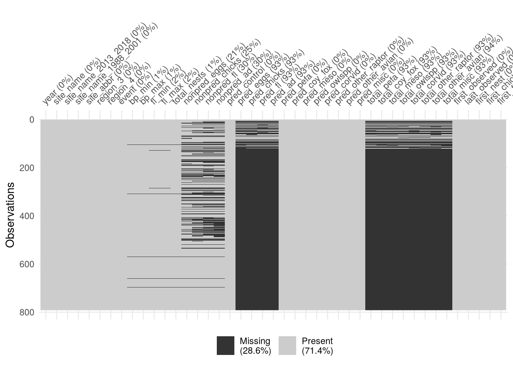
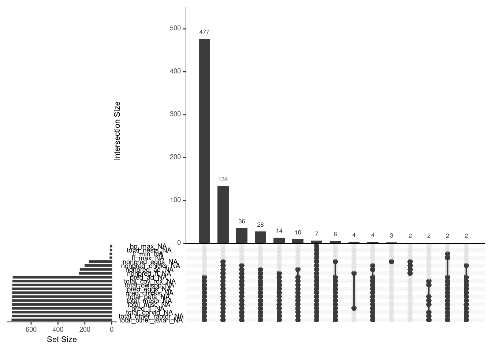
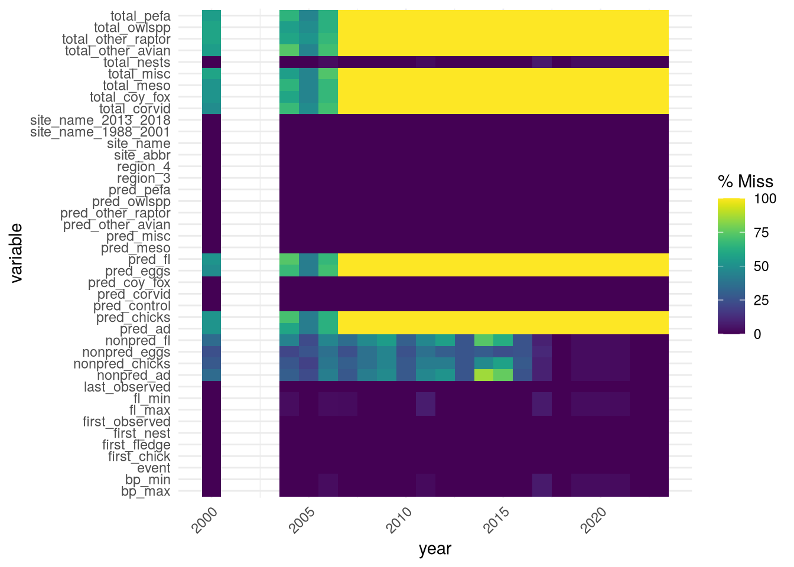
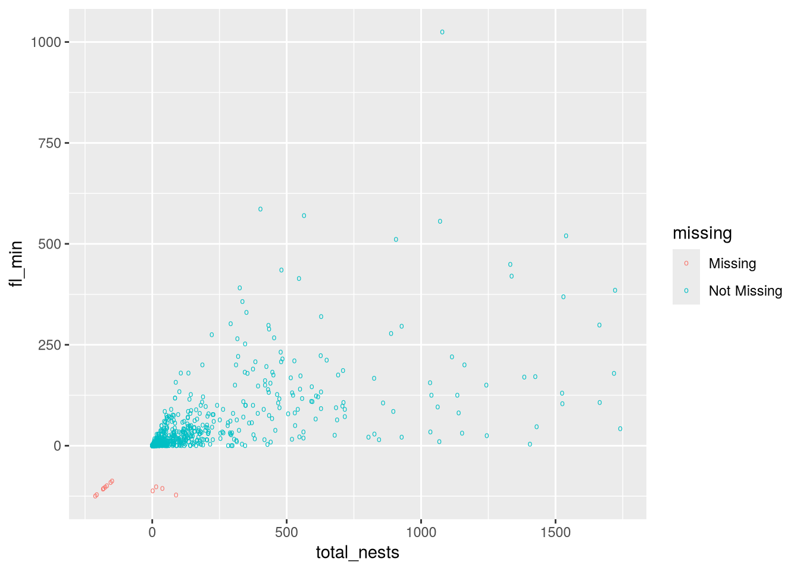

Explain why the cause of missingness in a dataset matters
Explain the differences between data MCAR, MAR, and MNAR
Describe some R packages for exploring and handling missing data
Visualize missing data to identify patterns
Explain what complete- and available-case analysis are
Explain what single and multiple imputation are
Use the mice package to perform multiple imputation on a dataset
ImportantRequired Packages
This chapter uses the following R packages:
ggplot2
mice
naniar
For a refresher about how to install and load packages, see the Packages section of DataLab’s R Basics workshop reader.
We say that data are missing or incomplete when some measurements are deliberately left out or left unspecified in a dataset. Just a few examples of why data might be missing are:
Measurement tools sometimes produce measurements that are too inaccurate to report directly or are obviously incorrect. In some cases, a tool might not be working at all at the moment it’s needed.
In survey studies, participants might skip or decline to answer some of the questions. Similarly, in medical studies, some participants might decide to drop out.
In time-limited studies, the study might end before data can be collected for all subjects. For instance, at the end of a 1-year study of lightbulb lifespans, it’s possible that some bulbs will still be working; the exact lifespan of those bulbs is unknown.
When data are missing, we have less information to use in analyses, so our conclusions are always weaker than they would’ve been with complete data. Certain kinds of missing data also interfere with how well a sample represents the population from which it was drawn, leading to inaccurate or biased results from standard statistical methods.
This chapter introduces a few general-purpose ways to think about, summarize, identify patterns in, and statistically account for missing data. Most of the methods described in this chapter assume that we have no information about the values of the missing data; for cases where we there is partial information, see Chapter 14.
13.1 Why Data Are Missing
The reasons why data are missing are the key to determining how they’ll impact statistical methods.
As a demonstration of this idea, consider a study of sea lion growth where the researchers weigh each of the sea lions in the study. Suppose their scale occasionally malfunctions and displays “ERROR” instead of a weight, so some of the sea lion weights are missing. Assuming the scale malfunctions randomly and independently of which sea lion is being weighed, we have no reason to expect that the observed weights and the censored weights are distributed differently. If we simply ignore the missing weights and proceed with a statistical analysis, our conclusions might be limited by lack of data, but they will still accurately (up to sampling error) reflect the population of sea lions.
On the other hand, suppose that the researchers’ scale only malfunctions and displays “ERROR” for especially heavy sea lions. Then the observed weights will mostly be from light sea lions and the missing weights will mostly be from heavy sea lions. If we ignore the missing weights and proceed with a statistical analysis, we’ll likely underestimate the typical weight of a sea lion, and other analyses may also be inaccurate. The reasons why the weights are missing matter for subsequent statistical work.
Little and Rubin (2019) divide reasons for missingness into three categories based on how they affect subsequent analyses (from least to most severe):
Data are missing completely at random (MCAR) when the probability of being missing is equal across all observations, regardless of the measured value and of other features. In the sea lions example, weights from the scale that occasionally malfunctions randomly and independently are MCAR.
For data MCAR, simple methods for handling missing data are generally safe to use and yield accurate results.
Data are missing at random (MAR) when the probability of being missing is equal across observations after grouping by (or controlling for) other features in the dataset. That is, missingness depends on other features, but they’re recorded in the dataset. In the sea lions example, the weights would be MAR if the scale malfunctions more for certain researchers, and the dataset indicates which researcher recorded each weight.
For data MAR, we must account for the cause when we handle the missing data. Simple methods may yield inaccurate or biased results.
Data are missing not at random (MNAR) when the probability of being missing is unequal across observations even after controlling for other features in the dataset. In other words, the missingness is due to unknown, external features or due to the measured values. In the sea lions example, weights from the scale that malfunctions more for heavy sea lions are MNAR. Older texts sometimes refer to MNAR as “not missing at random” (NMAR).
Censored data, which are the subject of Chapter 14, are an example of MNAR data where the probability of being missing is 100% for measured values in specific known intervals.
Unfortunately, there’s no statistical procedure to determine whether data are MNAR. This is inherent in what MNAR means: the cause of missingness is unknown—it’s the values of the missing data themselves or something that isn’t measured in the dataset. To conclude whether data are MNAR, we need a thorough understanding of how the data were collected.
Even for datasets where we’re confident (or comfortable assuming) that data are MCAR or MAR, statistical methods can’t tell us which is the case with complete certainty. There are some statistical tests we can apply, but like all statistical tests, these are subject to error.
Warning
How many data are missing is another important detail to consider before, during, and after analysis. Even when a dataset is structurally large (hundreds of rows and columns, for instance), if most of the data are missing, the information content can still be low.
Regardless of why data are missing, extreme lack of data leads to low-quality estimates (where the error is mostly due to sampling variation rather than bias in MCAR and some MAR scenarios).
13.2 Missing Data in R
R provides built-in support for missing data through the special value NA. It also provides functions to detect missing data (such as is.na) and parameters to ignore missing data (na.rm for most statistical functions).
There are many packages that extend R’s missing data capabilities. These three packages provide functions to clean, explore, and visualize missing data:
The naniar and VIM packages provide roughly similar functionality. The tidyr package is specifically focused on cleaning data (and not just missing data).
Most standard statistical methods require complete data. In order to accomodate missing data, we have two options:
Discard the observations with missing data;
Use a statistical model (such as a linear model) to fill the missing data with estimates.
For the latter, we recommend the popular mice package (which has online documentation); Section 13.5 explains more about why we recommend this package. The associated ggmice package provides supplementary functions to make ggplot2 plots.
In this reader, we use naniar for exploration and mice for filling missing data.
NoteSee Also
The CRAN Task View: Missing Data page is a curated list of R’s most widely-used packages related to missing data.
The website R-miss-tastic describes missing data workflows and packages for R (and to a lesser extent, Python). It also lists learning materials such as lectures, books, and example datasets. It’s updated regularly.
13.3 Dataset: CA Least Terns
For the examples in this chapter, we’ll use the California least terns dataset. Section 1.3 describes the dataset in more detail.
Important
Click here to download the 2000-2023 California least terns dataset.
If you haven’t already, we recommend you create a directory for this workshop. In your workshop directory, create a data/ subdirectory. Download and save the dataset in the data/ subdirectory.
'data.frame': 791 obs. of 43 variables:
$ year : int 2000 2000 2000 2000 2000 2000 2000 2000 2000 2000 ...
$ site_name : chr "PITTSBURG POWER PLANT" "ALBANY CENTRAL AVE" "ALAMEDA POINT" "KETTLEMAN CITY" ...
$ site_name_2013_2018: chr "Pittsburg Power Plant" "NA_NO POLYGON" "Alameda Point" "Kettleman" ...
$ site_name_1988_2001: chr "NA_2013_2018 POLYGON" "Albany Central Avenue" "NA_2013_2018 POLYGON" "NA_2013_2018 POLYGON" ...
$ site_abbr : chr "PITT_POWER" "AL_CENTAVE" "ALAM_PT" "KET_CTY" ...
$ region_3 : chr "S.F._BAY" "S.F._BAY" "S.F._BAY" "KINGS" ...
$ region_4 : chr "S.F._BAY" "S.F._BAY" "S.F._BAY" "KINGS" ...
$ event : chr "LA_NINA" "LA_NINA" "LA_NINA" "LA_NINA" ...
$ bp_min : num 15 6 282 2 4 9 30 21 73 166 ...
$ bp_max : num 15 12 301 3 5 9 32 21 73 167 ...
$ fl_min : int 16 1 200 1 4 17 11 9 60 64 ...
$ fl_max : int 18 1 230 2 4 17 11 9 65 64 ...
$ total_nests : int 15 20 312 3 5 9 32 22 73 252 ...
$ nonpred_eggs : int 3 NA 124 NA 2 0 NA 4 2 NA ...
$ nonpred_chicks : int 0 NA 81 3 0 1 27 3 0 NA ...
$ nonpred_fl : int 0 NA 2 1 0 0 0 NA 0 NA ...
$ nonpred_ad : int 0 NA 1 6 0 0 0 NA 0 NA ...
$ pred_control : chr "" "" "" "" ...
$ pred_eggs : int 4 NA 17 NA 0 NA 0 NA NA NA ...
$ pred_chicks : int 2 NA 0 NA 4 NA 3 NA NA NA ...
$ pred_fl : int 0 NA 0 NA 0 NA 0 NA NA NA ...
$ pred_ad : int 0 NA 0 NA 0 NA 0 NA NA NA ...
$ pred_pefa : chr "N" "" "N" "" ...
$ pred_coy_fox : chr "N" "" "N" "" ...
$ pred_meso : chr "N" "" "N" "" ...
$ pred_owlspp : chr "N" "" "N" "" ...
$ pred_corvid : chr "Y" "" "N" "" ...
$ pred_other_raptor : chr "Y" "" "Y" "" ...
$ pred_other_avian : chr "N" "" "Y" "" ...
$ pred_misc : chr "N" "" "N" "" ...
$ total_pefa : int 0 NA 0 NA 0 NA 0 NA NA NA ...
$ total_coy_fox : int 0 NA 0 NA 0 NA 0 NA NA NA ...
$ total_meso : int 0 NA 0 NA 0 NA 0 NA NA NA ...
$ total_owlspp : int 0 NA 0 NA 0 NA 0 NA NA NA ...
$ total_corvid : int 4 NA 0 NA 0 NA 0 NA NA NA ...
$ total_other_raptor : int 2 NA 6 NA 0 NA 3 NA NA NA ...
$ total_other_avian : int 0 NA 11 NA 4 NA 0 NA NA NA ...
$ total_misc : int 0 NA 0 NA 0 NA 0 NA NA NA ...
$ first_observed : chr "2000-05-11" "" "2000-05-01" "2000-06-10" ...
$ last_observed : chr "2000-08-05" "" "2000-08-19" "2000-09-24" ...
$ first_nest : chr "2000-05-26" "" "2000-05-16" "2000-06-17" ...
$ first_chick : chr "2000-06-18" "" "2000-06-07" "2000-07-22" ...
$ first_fledge : chr "2000-07-08" "" "2000-06-30" "2000-08-06" ...
The structural summary alone shows that there are missing data.
We can use R’s built-in is.na and colSums functions to compute counts of missing values per column:
When we explore a dataset with missingness, the goal is generally to understand how missing data within each feature are distributed relative to other features. In other words, we want to identify patterns and relationships. This kind of exploration is often helpful for distinguishing between data MCAR and MAR (Section 13.1), although it can’t tell us whether the data are MNAR. Exploring the missing data can also help us identify other limitations and potential problems, such as lack of sufficient data.
The key to exploring missing data is to create a shadow dataset, where each feature is replaced with a binary or categorical shadow feature that indicates missingess. We can do this on a per-column basis with R’s built-in is.na function. After constructing the shadow dataset, we can use standard exploration methods for categorical data (such as those in Chapter 2) to explore missingess.
Visualizations are a great way to explore data even when the data are missing. We can use the naniar package to produce several useful visualizations of missingness; the package is convenient because most of its functions compute the shadow dataset for us automatically.
Let’s use the California least terns dataset to demonstrate some of the missing data visualizations naniar provides. First, the vis_miss function makes a plot that summarizes missingness for an entire data frame:
library("naniar")vis_miss(terns)

Figure 13.1: At-a-glance plot of missingness in the California least terns dataset.
Rows are represented by horizontal lines with a segment for each column. The lines are stacked vertically, matching the layout of rows in the data frame. Gray segments indicate observed data, while black segments indicate missing data. This way we can see which columns have missing data, how much data are missing, and where missing data co-occur.
Figure 13.1 shows that most of the features in the dataset are complete. There’s a small proportion (about 2%) of missing observations in the bp_, fl_, and total_nests features. There are slightly more (about 30%) in the nonpred_ features. The most dramatic missingness (about 93%) is in the pred_ and total_ (excluding total_nests) features, with a high degree of co-occurrence across these features.
An upset plot is another way to visualize co-occurrence of missing values. Upset plots are general-purpose plots for visualizing set intersections, but the naniar package uses them specifically to visualize missingness.
We can make an upset plot with the gg_miss_upset function. The nsets parameter controls how many features are shown. The nintersects parameter controls how many co-occurrences (across collections of two or more features) are shown:
gg_miss_upset(terns, nsets =20, nintersects =15)

Figure 13.2: Upset plot of missingness in the California least terns dataset.
The small horizontal bar plot on the left shows the number of missing data for each feature. The large vertical bar plot on the right shows the number of missing data co-occuring across each collection of features. Each collection of features is indicated below the vertical bar plot; a black dot means the feature is included in the collection. The function automatically selects the feature collections with the most co-occurrences.
Figure 13.2 provides additional information about the co-occurrences in the pred_ and total_ features: there are 477 co-occurrences across only those features, and there are another 134 across those features as well as the nonpred_ features. There are lower numbers of co-occurrences across other collections of features.
Another way to look for missing data patterns is to group with a categorical feature and then examine missingness within each group. This is especially helpful for checking whether data are MAR according to a particular categorical feature. The naniar package provides the gg_miss_fct function to plot missing data by group. The first argument should be the dataset, and the second argument should be the feature to group by:
gg_miss_fct(terns, year)

Figure 13.3: Plot of missingness grouped by year for the California least terns dataset.
The plot shows the groups along the x-axis and each feature in the dataset along the y-axis. The proportion of missing values in each (group, feature) combination is represented by a shaded rectangle. In this case, lighter colors indicate more missing data.
Based on Figure 13.3, the pred_ and total_ features are entirely missing from 2007 onwards. For other features with missing data, most of them are before 2016 or 2017.
Scatter plots are enormously useful for investigating relationships between features. When the features have missing data, we can still make a scatter plot by simply discarding the observations where either feature is missing. This allows us to see relationships in the observed data, but can also be misleading because it makes it easy to forget about the missing data entirely. The naniar package’s geom_miss_point is an alternative to geom_point that makes a scatter plot with the missing data shown. The missing data are represented by jittered points that lie well outside the range of the observed data; they’re also color-coded. Let’s make a scatter plot of total_nests versus fl_min, with missing data shown:
library("ggplot2")ggplot(terns) +aes(x = total_nests, y = fl_min) +geom_miss_point(shape ="o")

Figure 13.4: Scatter plot of total nests versus minimum fledglings for the California least terns dataset.
Figure 13.4 shows that for this pair of features, there are only a few missing values (about 5-20) relative to observed values (hundreds).
In this section we’ve highlighted some of the most useful plots the naniar package provides, but see the reference for a complete list. The package also provides functions for exploring without visualizing (for instance, by making tables) and for filling missing data.
13.5 Statistics with Missing Data
Most statistical methods assume that all data are observed. For example, it’s unclear how to compute a sample mean when data are missing. In order to use these methods, we must modify the dataset so that there aren’t any missing data. We can do this either by discarding observations with missing data or by filling in the missing data.
First, let’s consider two common ways to discard observations:
In complete-case analysis, we discard every observation with missing data in any feature. Then we proceed with analysis.
The main advantage of complete-case analysis is its simplicity: special statistical methods are not necessary. The main disadvantage is that it wastes information—the incomplete observations may contain a lot of observed data.
Complete-case analysis is safe when data are MCAR. When data are MAR or MNAR, complete-case analysis can bias results.
In available-case analysis, we discard incomplete observations separately for each method based on the features that are needed. This means that we may use a different number of observations in each estimate or model!
The main advantage of available-case analysis is that it uses data more efficiently than complete-case analysis. The main disadvantage is that comparing or combining results where the number of observations differs is challenging, and some statistics—such as correlation—depend on being able to do so.
Available-case analysis is safe when data are MCAR. When data are MAR or MNAR, available-case analysis can bias results.
Now we turn to ways to impute, or fill in, missing data. The fundamental idea is to use a statistical model fitted on the observed data to predict the missing data. The model can be simple, such as computing a sample mean, or something more complicated. We’ll consider just two of many options for imputing missing data:
Sample means: for each feature, replace missing data with the mean of the observed data.
This is a poor way to impute data. The main advantage is that it’s simple and leads to unbiased estimates of means for data MCAR. The main disadvantage is that it biases most other statistics, regardless of why data are missing. As a specific example, it artificially lowers variance in the dataset, which leads to standard error estimates that are too small. Avoid using this approach.
Linear models: for each feature, fit a linear model on the observed data with the feature as a response and other features as predictors. Replace missing data with predictions from the model.
The main advantage of imputing with linear models is that it leads to unbiased estimates of means (and the model coefficients) for data MAR, provided that the features which influence missingness are included in the models. The main disadvantage is that it biases most other statistics. For instance, it leads to correlation estimates that are too large and standard error estimates that are too small. This approach is better than using sample means, but still leaves a lot to be desired.
Before we learn about a better way to impute missing data, let’s try sample mean imputation on the California least terns dataset in order to demonstrate why it’s problematic. We’ll impute two features, total_nests and fl_min, which each have a relatively small proportion of missing data (see Figure 13.1).
Before we impute, let’s construct shadow features to help us mark the imputed data on a plot later:
To see why sample mean imputation is often a poor choice, let’s make a scatter plot of total_nests versus fl_min. We’ll use the shadow features to color-code the imputed data and visually de-emphasize the observed data (via transparency):
Figure 13.5: Scatter plot of total nests versus minimum fledglings for the California least terns dataset, with missing data replaced by sample means.
In Figure 13.5, notice that all of the imputed data lie on a horizontal line at the mean of fl_min. It’s difficult to see, but the rightmost imputed point is actually several points, all with the same coordinates. Compared to the observed data, variation in the imputed data is much smaller. The imputed data also deviate from the fan-shaped pattern in the observed data. For these features, the proportions of missing data were low, so the effect of imputing on subsequent analyses will be small. However, for features with more missing data, it could be substantial and lead to incorrect results.
After discarding or imputing missing data, we can use standard statistical methods, such as linear models:
fit =lm(fl_min ~ total_nests, imp_mean)summary(fit)
Call:
lm(formula = fl_min ~ total_nests, data = imp_mean)
Residuals:
Min 1Q Median 3Q Max
-283.90 -14.37 -11.40 0.00 818.69
Coefficients:
Estimate Std. Error t value Pr(>|t|)
(Intercept) 11.398459 2.765023 4.122 4.15e-05 ***
total_nests 0.180642 0.008281 21.815 < 2e-16 ***
---
Signif. codes: 0 '***' 0.001 '**' 0.01 '*' 0.05 '.' 0.1 ' ' 1
Residual standard error: 67.89 on 789 degrees of freedom
Multiple R-squared: 0.3762, Adjusted R-squared: 0.3754
F-statistic: 475.9 on 1 and 789 DF, p-value: < 2.2e-16
13.5.1 Multiple Imputation
Complete-case analysis is simple, but wastes data and only works well when data are MCAR. Available-case analysis makes it difficult to combine statistics for multiple features (and is also limited to data MCAR). Imputation with sample means or predictions from linear models tend to bias subsequent analyses. We need a better way to handle missing data.
Donald Rubin gets to the root of the problem with all of the techniques we’ve seen so far:
Imputing one value for a missing datum cannot be correct in general, because we don’t know what value to impute with certainty (if we did, it wouldn’t be missing).
This insight led Rubin and others to develop multiple imputation. The central idea of multiple imputation is to impute by creating multiple copies of the original dataset, where the imputed values are different in each copy. We then conduct statistical analyses on each copy. When we’re finished, we combine the results from all of the copies using two formulas known as Rubin’s rules.
NoteNote: Single Imputation
Single imputation refers to imputation techniques that only produce one dataset, such as those described at the beginning of Section 13.5.
Within the multiple imputation procedure, we can use any model we want to impute values for each copy of the dataset. We’ll generally chose models that include some randomness, so that we can simulate the randomness when making predictions and thus get different imputed values for each copy. For instance, we can use a linear model where we combine the predictions with simulated or sampled residuals.
Multiple imputation generally leads to unbiased statistics for data MCAR and MAR. When data are MNAR, the results can still be biased.
NoteNote: Sensitivity Analysis
When we suspect data are MNAR, a common two-step approach is to:
Conduct an analysis as if the data are MAR (or MCAR).
Conduct a sensitivity analysis that examines hypothetical “what-if” scenarios for the missing data, measuring how (and how much) the results of the step 1 analysis change.
Qualify the results and conclusions from the step 1 analysis with the results from the sensitivity analysis.
Several R packages implement multiple imputation, but mice (which stands for “multiple imputation by chained equations”) is the most widely-used package. The package provides functions that automate most of the steps in multiple imputation.
The package’s mice function performs multiple imputation. The first argument must be the original dataset. The parameter m controls the number of copies. The parameter method controls which model is used to generate predictions (see ?mice for a complete list).
Let’s compute multiple imputations for the California least terns dataset. We’ll make just 3 copies of the dataset. We’ll use the norm method, which fits a different linear model on each copy and uses it to make a prediction with a randomly sampled residual:
library("mice")imp =mice(terns, m =3, method ="norm", printFlag =FALSE)
The mice package’s complete function provides access to the copies of the dataset. Let’s make a scatter plot of total_nests versus fl_min for each copy, with the imputed data marked (similar to Figure 13.4):
Figure 13.6: Scatter plots of total nests versus minimum fledglings for the California least terns dataset, for each copy generated by multiple imputation. In each plot, imputed data are marked.
The mice package provides a modified version of R’s built-in with function to make conducting analyses on all copies of a multiply imputed dataset convenient. For instance, this code fits a linear model with outcome fl_min and predictor total_nests on each copy:
fits =with(imp, lm(fl_min ~ total_nests))
The package’s pool function uses Rubin’s rules to combine results from multiple copies of a multiply imputed dataset. This code computes the final estimates from the fitted linear models:
For these features, the results are almost the same as when we used sample mean imputation (Section 13.5). This is because the proportion of missing data is very low; we would see a more dramatic difference if the proportion was higher.
NoteSee Also
Statistical Analysis with Missing Data(Little and Rubin 2019) is a definitive textbook about missing data. The authors provide detailed explanations of most methods in use today (some of which they created).
Handbook of Missing Data Methodology(Molenberghs et al. 2014) is an anthology similar in scope and depth to Little and Rubin (2019). It’s an excellent companion or alternative to that book.
Flexible Imptuation of Missing Data(van Buuren 2021) was written by the creator of the mice package for R and provides some examples of how to use the package. The first chapter is an excellent, intuitive overview of missing data concepts and methods.
All three books include graduate-level mathematics, which can make for difficult reading. Unfortunately, we’re not aware of any missing data books that provide a gentler introduction to the subject (but see R-miss-tastic, which is regularly updated, for many more references).
Arel-Bundock, Vincent. 2025. Model to Meaning: How to Interpret Statistical Models with R and Python. CRC Press LLC. https://marginaleffects.com/.
Carroll, Stephanie Russo, Ibrahim Garba, Oscar L. Figueroa-Rodríguez, et al. 2020. “The CARE Principles for Indigenous Data Governance.”Data Science Journal 19 (1). https://doi.org/10.5334/dsj-2020-043.
Cleveland, Robert B., William S. Cleveland, Jean E. McRae, and Irma Terpenning. 1990. “STL: A Seasonal-Trend Decomposition Procedure Based on Loess.”Journal of Official Statistics (Sweden).
Cobb, George W. 2007. “The Introductory Statistics Course: A Ptolemaic Curriculum?”Technology Innovations in Statistics Education 1 (1). https://doi.org/10.5070/T511000028.
Gelman, Andrew, and Jennifer Hill. 2007. Data Analysis Using Regression and Multilevel/Hierarchical Models. Cambridge University Press. https://sites.stat.columbia.edu/gelman/arm/.
Helsel, Dennis R. 2012. Statistics for Censored Environmental Data Using Minitab and R. 2nd ed. Statistics in Practice. Wiley.
Hesterberg, Tim. 2014. What Teachers Should Know about the Bootstrap: Resampling in the Undergraduate Statistics Curriculum. arXiv:1411.5279. arXiv. https://doi.org/10.48550/arXiv.1411.5279.
Hyndman, Rob J., and George Athanasopoulos. 2018. Forecasting: Principles and Practice. 2nd ed. OTexts. https://otexts.com/fpp2/.
Hyndman, Rob J., and George Athanasopoulos. 2021. Forecasting: Principles and Practice. 3rd ed. OTexts. https://otexts.com/fpp3/.
Kleinbaum, David G., and Mitchel Klein. 2012. Survival Analysis: A Self-Learning Text. 3rd ed. Springer.
Kuhn, Max, and Kjell Johnson. 2020. Feature Engineering and Selection: A Practical Approach for Predictive Models. CRC Press, Taylor & Francis Group. https://feat.engineering/.
Little, Roderick J. A., and Donald B. Rubin. 2019. Statistical Analysis with Missing Data. 3rd ed. Vol. 793. Wiley Series in Probability and Statistics. Wiley.
Long, J. D., and Paul Teetor. 2019. R Cookbook: Proven Recipes for Data Analysis, Statistics, and Graphics. O’Reilly Media. https://rc2e.com/.
Lubin, Jay H., Joanne S. Colt, David Camann, et al. 2004. “Epidemiologic Evaluation of Measurement Data in the Presence of Detection Limits.”Environmental Health Perspectives 112 (17): 1691–96. https://doi.org/10.1289/ehp.7199.
Matejka, Justin, and George Fitzmaurice. 2017. “Same Stats, Different Graphs: Generating Datasets with Varied Appearance and Identical Statistics Through Simulated Annealing.”Proceedings of the 2017 CHI Conference on Human Factors in Computing Systems (New York, NY, USA), CHI ’17, May 2, 1290–94. https://doi.org/10.1145/3025453.3025912.
McElreath, Richard. 2020. Statistical Rethinking: A Bayesian Course with Examples in R and STAN. Chapman and Hall/CRC.
Molenberghs, Geert, Garrett Fitzmaurice, Michael G. Kenward, Anastasios Tsiatis, and Geert Verbeke, eds. 2014. Handbook of Missing Data Methodology. Chapman and Hall/CRC. https://doi.org/10.1201/b17622.
The Turing Way Community. 2025. The Turing Way: A Handbook for Reproducible, Ethical and Collaborative Research. V. 1.2.3. Zenodo, released April. https://doi.org/10.5281/zenodo.15213042.